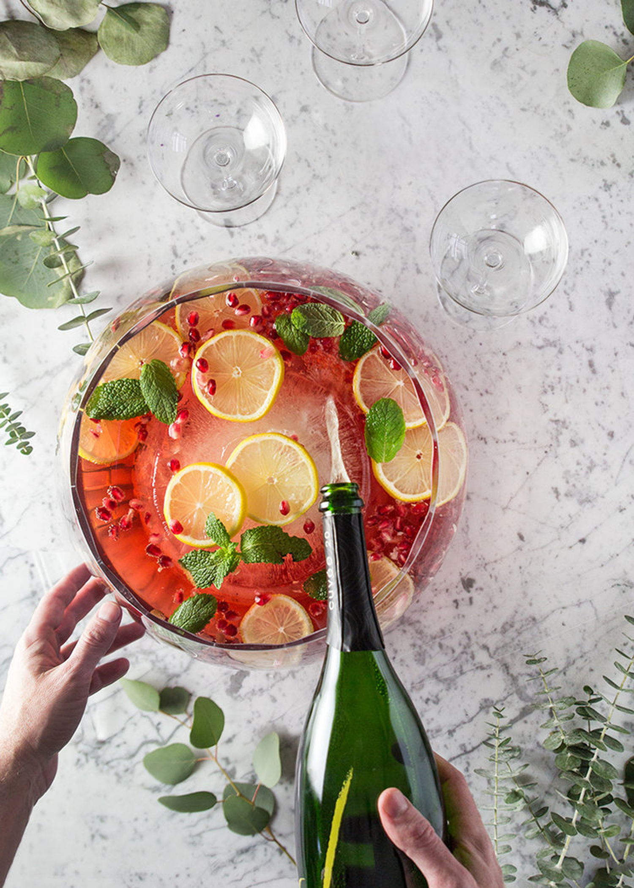

Pomegranate Champagne Punch
If you've followed along, you probably know that I love champagne cocktails. So for my birthday, I wanted to make a pre-midnight drink for friends, carrying the champagne theme throughout the evening. This boozy champagne punch is mixed with pomegranate juice, mint and lemons, then kicked up a notch with rum!
The original recipe calls for a brut champagne but you can also use something more sweet, like my fav, Martini and Rossi - Asti. If you use something on the sweet side, omit the simple syrup noted below.
You will need:
|
|
- Combine water and sugar in a small sauce pan and bring to a boil. Stir until sugar dissolves, simmering for about 5 minutes. Let cool completely.
- Place your ice block in a punch bowl and add, champagne, pomegranate juice and rum, stirring until combined. Add simply syrup to achieve desired sweetness.
- Mix in lemon slices, pomegranate seeds and mint leaves.